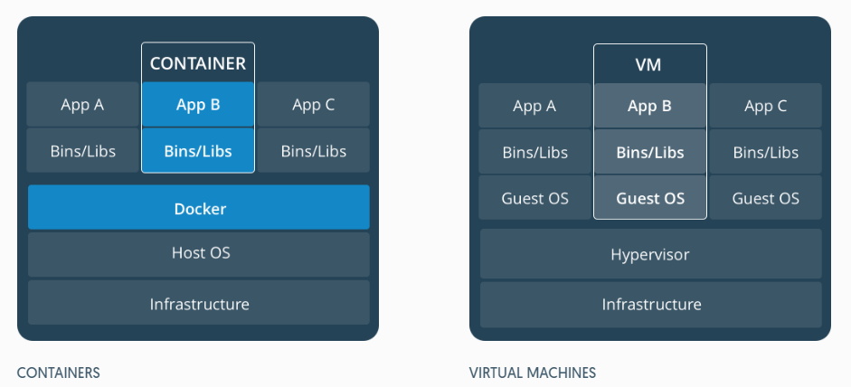
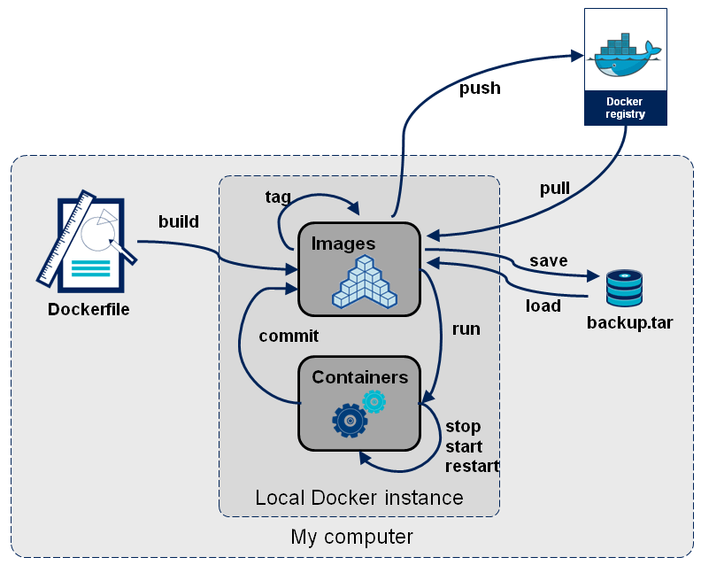

Docker 基本使用
Posted
最近很紅的 Container 技術 Docker，來試玩看看，寫個筆記。
什麼是 Docker ?
- 使用 Container 技術
- 不是 VM (Virtual Machine)
- 有可封裝性
- 可攜性
- 輕量化
Docker 可以做什麼?
- 真對個別專案去建立它所需要的環境
- 每個專案有獨立空間
- 可打包和可攜性
- 部屬輕量化且快速
Containers vs Virtual Machine

-
Containers 不必實作作業系統，直接使用 Host 資源，效能上快很多，共享 OS kernel，image 大小通常為 MB，幾乎立即啟動。
-
Virtual Machine 模擬完整作業系統，效能上比較慢，每個VM包含Apps、Bins/Libs，大小通常為 GB，啟動上也慢很多。
| 特性 | Containers | Virtual Machines |
|---|---|---|
| 啟動 | 秒級 | 分鐘級 |
| 硬碟容量 | 一般為 MB | 一般為 GB |
| 效能 | 接近原生 | 比較慢 |
| 系統支援量 | 單機支援上千個容器 | 一般幾十個 |
基本概念

與 Git Vagrant 的相似處
| Docker | Git | Vagrant |
|---|---|---|
| Image (映像檔) | git log | Vagrant Box |
| Container (容器) | staging | Running VM |
| Registry (倉庫) | GitHub | VagrantCloud |
Image 映像檔
映像檔是一個唯讀的模板，可以用來建立容器，也可以從倉庫 pull 做好的映像檔來使用。
- 唯讀
- 內容不可改變
- 一個環境可以用來運行
run→ Container
Container 容器
Docker 利用容器執行應用，從映像檔建立的執行實例。它可以被啟動、開始、停止、刪除。每個容器都是相互隔離的、保證安全的平台。
- 可讀可寫
- 執行程序
- 一到多個映像檔建構而成
commit→ Image
Registry 倉庫
倉庫是集中存放映像檔檔案的場所，公開倉庫（Public）和私有倉庫（Private）兩種形式。最大的公開倉庫是 Docker Hub，存放了數量龐大的映像檔供使用者下載。使用者也可以在本地網路內建立一個私有倉庫。
pushImage → RegistrypullRegistry → Image
Installation
參考官方文件，Windows 10 或 Mac 10.11 版本以上可以直接安裝，以下的版本可能要安裝 Docker Toolbox，用 VM 模擬 Docker 所需的環境。
用 VM 架環境，本地端 IP 可能就不是 localhost，要用
docker-machine ip查看 ip
Command
-
docker version 顯示 Docker 版本資訊
# docker version [OPTIONS] $ docker version Client: Version: 17.04.0-ce API version: 1.28 Go version: go1.7.5 Git commit: 4845c56 Built: Wed Apr 5 23:33:17 2017 OS/Arch: windows/amd64 Server: Version: 17.04.0-ce API version: 1.28 (minimum version 1.12) Go version: go1.7.5 Git commit: 4845c56 Built: Wed Apr 5 18:45:47 2017 OS/Arch: linux/amd64 Experimental: false -
docker info 顯示系統資訊
# docker info [OPTIONS] 略 -
docker pull 下載映像檔
# docker pull [OPTIONS] NAME[:TAG|@DIGEST] $ docker pull hello-world Using default tag: latest latest: Pulling from library/hello-world 78445dd45222: Pulling fs layer 78445dd45222: Verifying Checksum 78445dd45222: Download complete 78445dd45222: Pull complete Digest: sha256:c5515758d4c5e1e838e9cd307f6c6a0d620b5e07e6f927b07d05f6d12a1ac8d7 Status: Downloaded newer image for hello-world:latest -
docker images 列出映像檔
# docker images [OPTIONS] [REPOSITORY[:TAG]] $ docker images REPOSITORY TAG IMAGE ID CREATED SIZE node latest 699c67f773d5 5 days ago 665MB nginx latest 46102226f2fd 13 days ago 109MB php latest 000ccf546bbd 2 weeks ago 365MB mysql latest 9e64176cd8a2 2 weeks ago 407MB hello-world latest 48b5124b2768 3 months ago 1.84kB laraedit/laraedit latest 42d78c084a84 9 months ago 1.18GB -
docker run 新建並啟動容器
# docker run [OPTIONS] IMAGE [COMMAND] [ARG...] # # -d: daemon 模式，背景執行 # -p: 設定連接埠 [hostIP]:[hostPort]:[ContainerPort] # -i: 互動模式 # -t: 可使用終端機操作 # -v: 掛載檔案到容器 [/host]:[/container] # -e: 設定環境變數 # --name: 設定容器別名 # --rm: 執行完指令就刪除容器 # --link: 連結某個容器 [容器名稱]:[別名] # 1. 背景執行 nginx 服務，命名為 my-nginx，Port 8080->80 $ docker run -d --name my-nginx -p 8080:80 nginx 2233ffad53e4335f15623cea8e204b3ace16d4a8a3461430e3fd8824334eb449 # 2. 顯示php版本，之後容器刪除 $ docker run --rm -it php php -v PHP 7.1.4 (cli) (built: Apr 25 2017 03:19:44) ( NTS ) Copyright (c) 1997-2017 The PHP Group Zend Engine v3.1.0, Copyright (c) 1998-2017 Zend Technologies # 3.背景啟動 mysql 容器，Port 3306->3306，設定 mysql 密碼為 password $ docker run -d -p 3306:3306 -e MYSQL_ROOT_PASSWORD=password mysql cfc30f2595de7518537f4ac0c293a355f77c007292225516aed7dee1cf89ae0f # 4. 掛載當前目錄到 laraedit 容器裡 $ docker run -d --name myLaravel -p 8080:80 -v `pwd`:/var/www/html/app laraedit/laraedit 291f0f4d3349a31fb84f60bb1c462b4f209ca5cccc28b91352d65f798973934b -
docker ps 列出所有容器
# docker ps [OPTIONS] # # -a: 列出所有容器，包含沒有在執行的 $ docker ps -a CONTAINER ID IMAGE COMMAND CREATED STATUS PORTS NAMES cfc30f2595de mysql "docker-entrypoint..." 12 minutes ago Up 12 minutes 0.0.0.0:3306->3306/tcp optimistic_volhard -
docker start / restart / stop 啟動/重啟/關閉 容器
# docker start/restart/stop [OPTIONS] CONTAINER [CONTAINER...] # # container 可用 id or name # 可用空格隔開，處理多個 # 1. 關閉容器 id cfc30f2595de $ docker stop cfc30f2595de cfc30f2595de # 2. 啟動容器 id cfc30f2595de $ docker start cfc30f2595de cfc30f2595de -
docker exec 在一個正在執行的容器執行指令
# docker exec [OPTIONS] CONTAINER COMMAND [ARG...] # 1. 啟動 mysql 容器 $ docker run -d --name my-mysql -e MYSQL_ROOT_PASSWORD=password mysql c2b0ed24dc33cd3fd4c0c9f56020010809fefd40094c876dddf8fba9abb23035 # 2. 執行容器 mysql 指令 $ docker exec -it my-mysql mysql -uroot -p Enter password: Welcome to the MySQL monitor. Commands end with ; or \g. Your MySQL connection id is 3 Server version: 5.7.18 MySQL Community Server (GPL) Copyright (c) 2000, 2017, Oracle and/or its affiliates. All rights reserved. Oracle is a registered trademark of Oracle Corporation and/or its affiliates. Other names may be trademarks of their respective owners. Type 'help;' or '\h' for help. Type '\c' to clear the current input statement. mysql> -
docker commit 提交容器為映像檔
# docker commit [OPTIONS] CONTAINER [REPOSITORY[:TAG]] # # -a 作者 # -m 提交訊息 $ docker commit -a "clouding" -m "new image" 06de29dd84d1 my-mysql sha256:60ac23ef0ac7103b50916b2ef165f685faff4fba1358261b84608004c0337048 -
docker tag 修改 tag
# docker tag SOURCE_IMAGE[:TAG] TARGET_IMAGE[:TAG] # 透過 IMAGE ID 修改 $ docker tag 60ac23ef0ac7 my-mysql:1.0 # 透過 REPOSITORY 修改 $ docker tag my-mysql my-mysql:1.0 -
docker rmi 刪除映像檔
# docker rmi [OPTIONS] IMAGE [IMAGE...] # # -f 強制移除 (包含正在執行的) # 可用空格隔開，處理多個 $ docker rmi my-mysql:1.0 Untagged: my-mysql:1.0 # Delete all dangling (unused) images docker rmi $( docker images -q -f dangling=true) -
docker rm 刪除容器
# docker rm [OPTIONS] CONTAINER [CONTAINER...] # # -f 強制移除 (包含正在執行的) # 可用空格隔開，處理多個 $ docker run -d --name my-nginx nginx 4d665d84b4674514b1baa3cfca1dc272cc82bcda800ff13ced602b2d4b0bf9483b $ docker rm -f my-nginx my-nginx # Delete all stopped containers docker rm $( docker ps -q -f status=exited) -
docker push 上傳映像檔
# docker push [OPTIONS] NAME[:TAG] # # 需要先登入 Docker Registry 才可以使用 # 登入 Docker Hub $ docker login # 更改 名稱 $ docker tag my-hello ghost0436/hello-world # push $ docker push ghost0436/hello-world
後記
Docker 是一個很強大的工具，能運用的方法非常多，這邊只有寫一些基本的用法。最近 Docekr 被改成 Moby，之間的關西搞得我好亂阿！之後有空再深入學習吧。